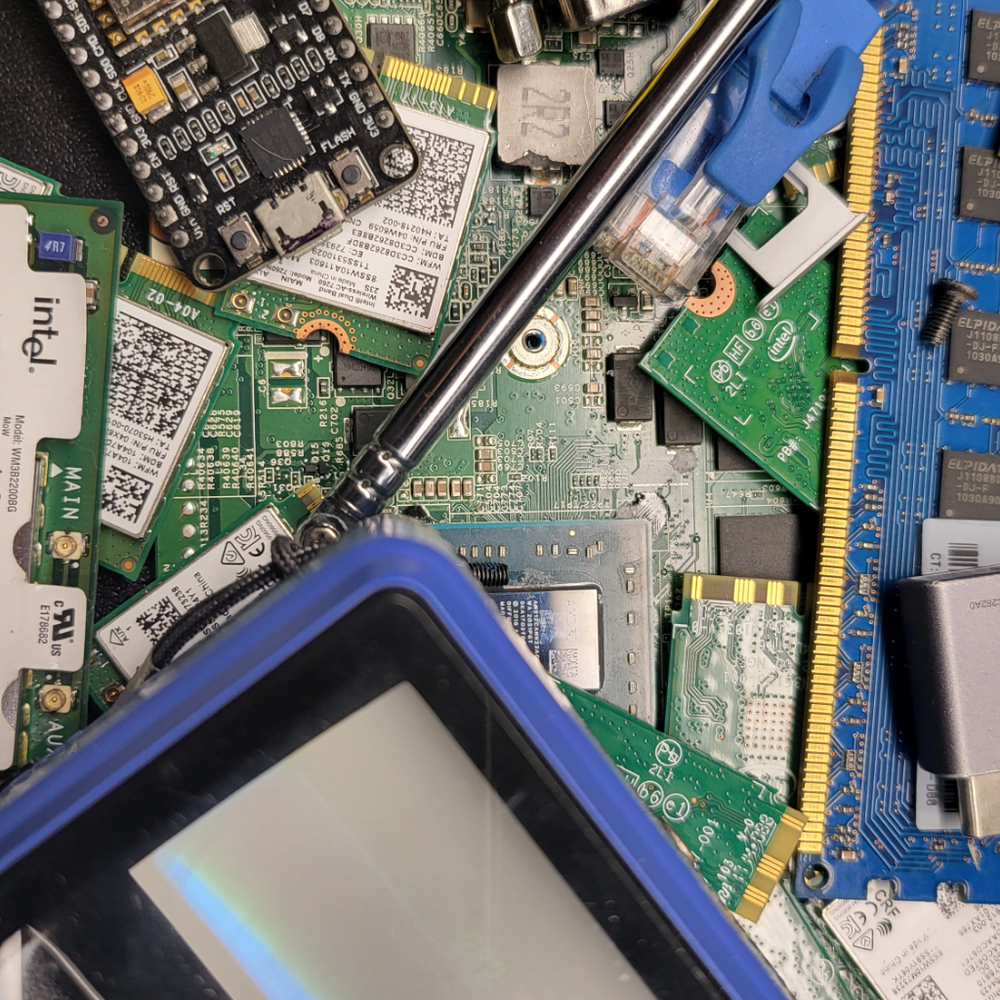

About me
Hi, I’m LanAriesEchos.
I’m into technology in all its forms—from building useful web projects and tinkering with hardware to repairing and refurbishing devices. I enjoy figuring out how things work and finding practical ways to make tech more useful.

What I’m working on
TheLanout SiteSaver keeps bookmarks close at hand, with browser imports, pinned favorites, and local backups.
I’m also working toward starting a small business focused on refurbishing devices, offering free data destruction for devices being disposed of, and providing tech repair.
Find me online
Follow along, watch my videos, or come say hello.
The Magicians Program
Volunteers are welcome to help refurbish technology and reduce e-waste. I can document the hours you contribute for your school’s volunteer requirements.
Support the mission
If you’d like to help, donations on Patreon will support my goal of reducing e-waste and getting useful technology to communities and schools that need it.
Support on Patreon